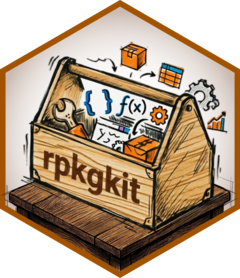

Package Setup & Maintenace
rpkgkit 0.1.21
Yuxi Yang
2026-10-23
Source:vignettes/pkg_maintain.Rmd
pkg_maintain.Rmd#> Package: RtmpUlamDe
#> Title: What the Package Does (One Line, Title Case)
#> Version: 0.0.0.9000
#> Authors@R (parsed):
#> * First Last <first.last@example.com> [aut, cre]
#> Description: What the package does (one paragraph).
#> License: `use_mit_license()`, `use_gpl3_license()` or friends to
#> pick a license
#> Config/roxygen2/version: 8.1.1
#> Encoding: UTF-8
#> Roxygen: list(markdown = TRUE)Create package infrastructure
A startup message
use_zzz() creates a package documentation file with
.onLoad, .onAttach, and %||%. It
is similar to usethis::use_package_doc() while also
providing a useful starting template.
use_zzz(path = dir, open = FALSE)
#> ✔ Setting active project to "/tmp/RtmpUlamDe".
#> ✔ Created /tmp/RtmpUlamDe/R/RtmpUlamDe-package.R from template.
#> ✔ Adding cli to Imports field in DESCRIPTION.
#>
#> ☐ Refer to functions with `cli::fun()`.Check missing function in _pkgdown reference
check_pkgdown_reference() identifies exported functions
that are absent from the reference section of
_pkgdown.yml.
check_pkgdown_reference(pkg = dir)Configure the clangd language server
use_clangd() writes a .clangd configuration
file that lets the clangd language server find the system R headers and
the include/ directory of the packages you pass in
include (Rcpp, RcppEigen and
RcppArmadillo by default). Packages that are not installed
are skipped with a warning.
use_clangd(path = dir, overwrite = TRUE)
#> Warning: Package RcppEigen is not installed; skipping its
#> include path.
#> Warning: Package RcppArmadillo is not installed; skipping its
#> include path.
#> ✔ Created /tmp/RtmpUlamDe/.clangd.When path is a package root, the file also disables
background indexing for the R/ directory (which holds no
C++ code) and adds .clangd to
.Rbuildignore.
use_clangd(path = dir, include = c("Rcpp", "BH"), overwrite = TRUE)Vendor permissively licensed code
use_vendor() records attribution and licensing
information when incorporating selected source files from a permissively
licensed GitHub R package. It creates an inst/vendor/
directory, a R/vendor-*.R file, and updates relevant
DESCRIPTION fields.
try(use_vendor(
pkg = "WangLabCSU/rpkgkit",
"43_use_vendor.R",
branch = "main",
path = dir
))
#> ℹ Fetching repository information for WangLabCSU/rpkgkit...
#> ✔ Vendor package uses MIT license.
#> ✔ Created directory /tmp/RtmpUlamDe/inst/vendor/rpkgkit.
#> ✔ Copied LICENSE.
#> ✔ Copied LICENSE.md.
#> ✔ Created inst/vendor/rpkgkit/README.md.
#> ✔ Created /tmp/RtmpUlamDe/R/vendor-rpkgkit.R.
#> ✔ Added rpkgkit authors to Authors@R.
#> ✔ Updated DESCRIPTION.
#> ☐ Consider pasting the following statement into README.md
#>
#>
#> ## Acknowledgements
#>
#> We would like to thank the following people and projects:
#>
#> - The authors of the [rpkgkit](https://github.com/WangLabCSU/rpkgkit) package — **Yuxi Yang** — whose code is included (under MIT license) in `R/vendor-rpkgkit.R`.Only packages with a supported permissive license can be vendored. Review the acknowledgement text printed by the function and add it to your README when appropriate.
rpkgkit::PERMISSIVE_LICENSE
#> [1] "MIT" "Apache-2.0" "Apache 2.0" "BSD-2-Clause" "BSD-3-Clause"
#> [6] "Unlicense" "CC0-1.0" "CC0"
usethis extensions
Use the following helpers from the package root:
Use R 4.1.0 version
R 4.1.0 introduced the pipe (|>) and anonymous
function \(). If these syntaxes need to be used in a
package, the R package must require at least R version 4.1.0.
use_r_v4.1.0(path = dir)
#> ✔ Adding R to Depends field in DESCRIPTION.Add URL in DESCRIPTION
use_url(dir)Add bug reports URL in DESCRIPTION
use_bugreports(dir)Open CFF
CITATION.cff files are plain text files with human- and machine-readable citation information for software and datasets.
Code developers can include such files in their source code repositories to let others know how to correctly cite their software.
This cannot replace
usethis::use_citation(), it just complements
project.
Global ignore-file templates
Use add_global_rbuildignore() and
add_global_gitgnore() to add the corresponding global
ignore-file templates to a package.
add_global_rbuildignore(path = dir)
#> ✔ Added 39 pattern(s) to .Rbuildignore.
add_global_gitgnore(pkg = dir)Check system dependencies
Some packages need system development libraries (graphics and font
libraries, for example) to compile. check_sysdeps() detects
the package manager in use (dpkg, rpm,
pacman, apk or brew), checks each
dependency with it, and reports every hit and miss together with a
ready-to-paste install command for the missing ones.
With deps = NULL (the default), a built-in list of
graphics and font libraries (freetype,
libjpeg, libpng, libtiff,
libwebp, harfbuzz, fribidi,
fontconfig) is checked using the names that the detected
package manager expects. Pass your own names in deps, and
optionally set manager to check against a manager other
than the detected one:
check_sysdeps(c("freetype-devel", "libwebp-devel"), manager = "rpm")The result is returned invisibly as a named logical vector, so it can
be reused in scripts. Set verbose = FALSE to keep the run
silent:
ok <- check_sysdeps(verbose = FALSE)
ok[!ok]Detect the Positron version
get_positron_version() reports the version of the
Positron IDE that hosts the current R session. It is useful for
diagnostics, bug reports, or for enabling IDE-specific behaviour only on
recent builds.
get_positron_version() # e.g. "2025.01.0"
get_positron_version(long = TRUE) # e.g. "2025.01.0-123"The version is looked up in three steps, in this order:
- the
POSITRON_VERSIONenvironment variable set by Positron for its R sessions (POSITRON_LONG_VERSION, which also carries the build number, whenlong = TRUE); - the
.ps.positron_version()helper that the IDE injects into the session; - the
positron --versioncommand-line tool.
If the session does not run inside Positron and no
positron executable is on PATH, the function
returns NA_character_ instead of throwing an error, so it
is safe to call in any session, including CI.